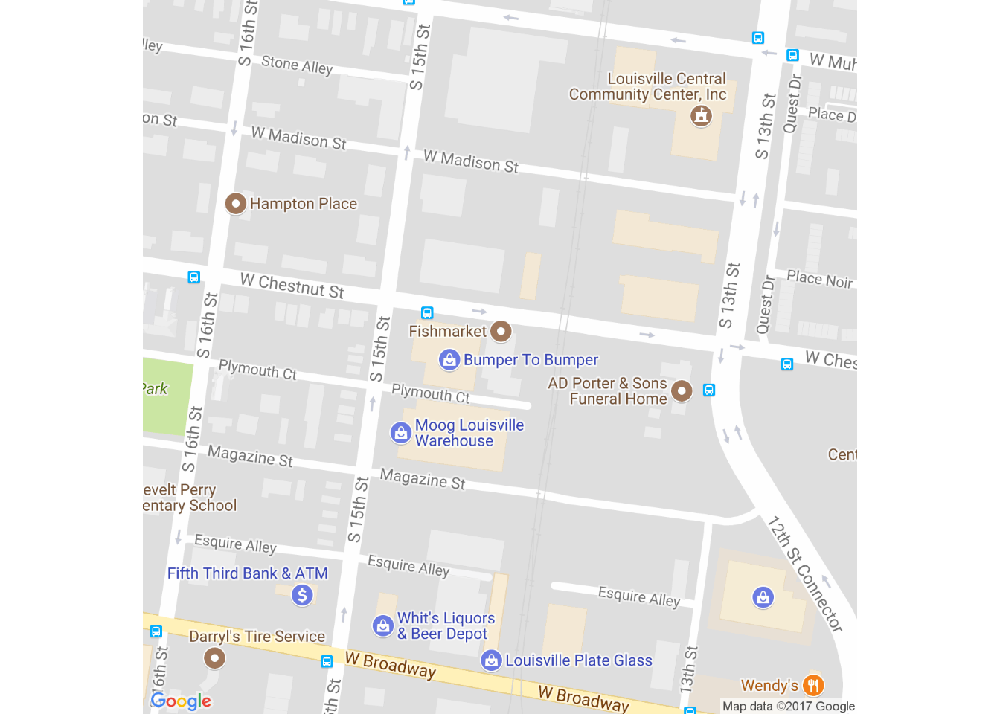

FISHMARKET INC.
“Seafood, Meats and Specialty Foods”Established in 1988 by Jere and Steven Smith, Fishmarket Inc. was solely a seafood processor/distributor carrying the finest in fresh, frozen, live and value-added seafood products. The mission statement for the company was, “provide our best product with our best service at our best price”. Although it may not be “trendy”, this statement is true to our core beliefs as a company and remains our mission statement today! The company sold their products to retailers, restaurants, hotels and restaurants throughout the Midwest.
In 1998, Steven’s twin brother, Bradley Smith joined the company. With the team together, the company began to expand into other areas as requested by our customers. In 2005, we purchased Kiefer Meats, bringing on a full line of beef, pork, lamb and veal to the mix of products we offered. In 2005 we also purchased Copper Kettle Co. moving the company into the production of specialty cheese spreads and dips.
As our company has grown from strictly a seafood company to a full line distributor/processor, we have never lost sight of our “local” family of producers. Hence, we have been a member of “Kentucky Proud” since its inception. We carry over 300 shelf stable items from local family farms and producers. We also procure Kentucky grown beef and pork along with specialty cheeses made here in Kentucky! In addition, we are producing a variety of breaded products such as; breaded pickles, green tomatoes, chicken tenders, oysters and cod just to name a few, under the “Smith’s Family Market” brand.
As you can see, “We Aren’t Just Seafood Anymore”! We have grown as our customers have requested of us and positioned our company to be a supplier of the best Seafood, Meats and Specialty Foods to Retailers and the Foodservice industry in the Midwest. We are proud of our growth and will continue to seek innovative and aggressive ways to manufacture and distribute our vast array of products to all. All this while staying firm in mission statement of “provide our best product with our best service at our best price”.
Sincerely,
Steven C Smith
Bradley W Smith
| 1406 West Chestnut St, Louisville, KY 40203 |
